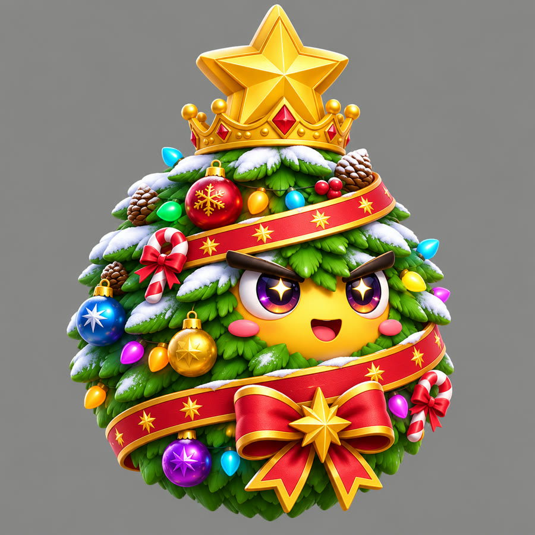
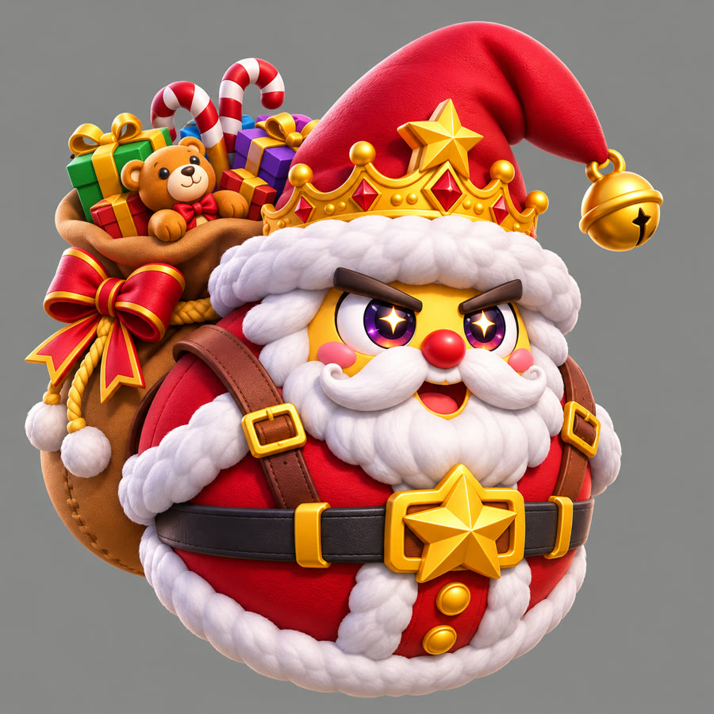
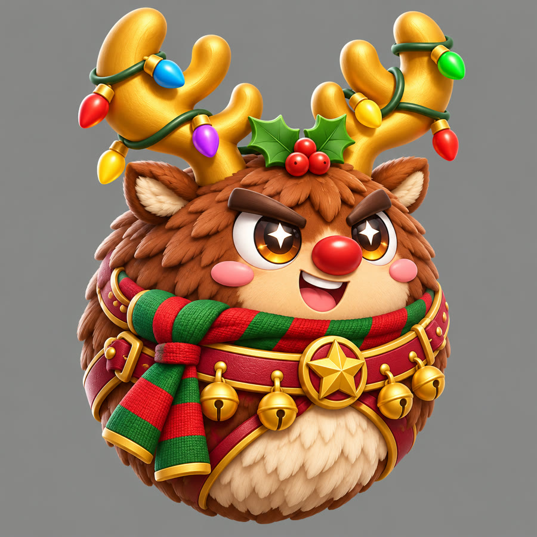
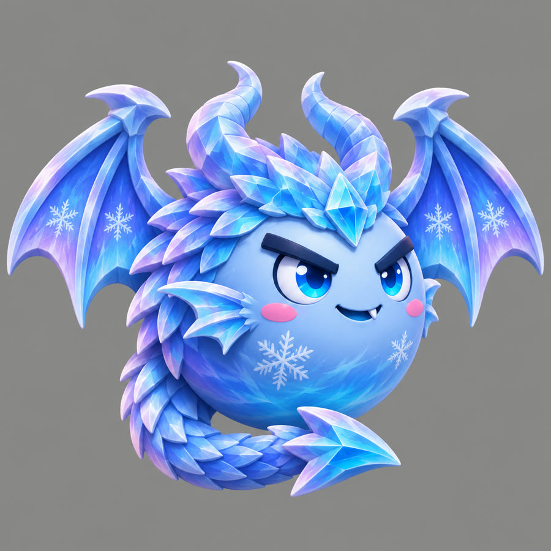
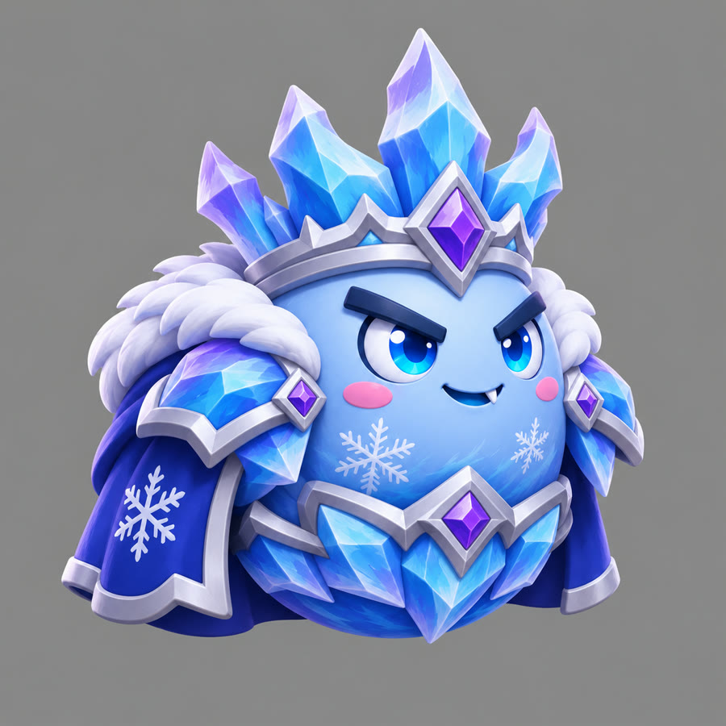
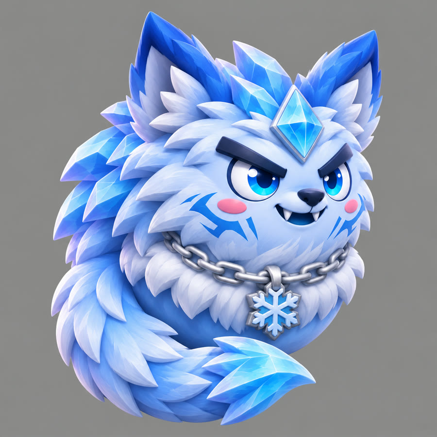
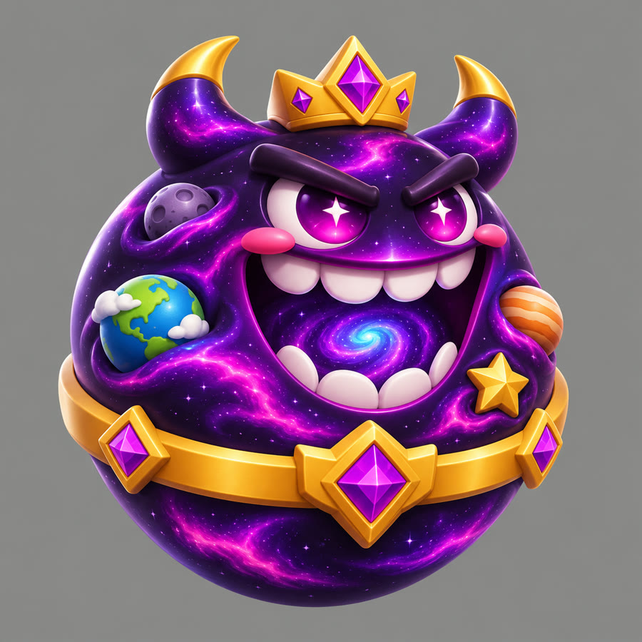
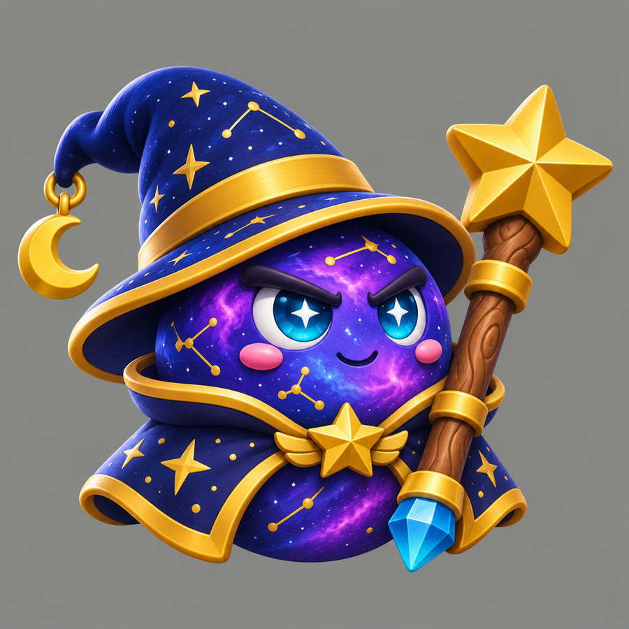

전설 스킨 콘셉트 — 테마별 3종
2026년 11월 25일. AI 3D 변환에 맞춰 캐릭터 한 덩어리만 그린 시안입니다 (OpenAI gpt-image-2 생성, 실제 게임 화면 아님). 고른 그림을 Meshy로 3D 모델로 바꿔 게임에 넣습니다. 벚꽃 여우신은 이미 완료.
크리스마스

A. 별빛 트리
전나무 가지로 덮인 몸, 왕관과 큰 금별, 리본과 오너먼트

B. 산타 선물왕
산타 코트와 수염, 왕관 두른 산타 모자, 등에 멘 선물 자루

C. 루돌프 대장
갈색 털과 빨간 코, 전구 감긴 금 뿔, 방울 달린 썰매 벨트와 목도리
얼음

A. 서리 드래곤
얼음 뿔과 결정 갈기, 결정 날개, 화살촉 꼬리

B. 서리 군주
얼음 첨탑 왕관, 결정 갑옷, 털 깃 달린 왕의 망토

C. 서리 늑대
흰 털과 얼음 갈기, 뾰족한 귀, 얼음 끝 꼬리, 눈꽃 목걸이
블랙홀

A. 꼬마 사신
은하 무늬 두건과 망토, 금 별 문장, 초승달 낫

B. 공허의 포식자
은하가 도는 큰 입, 금 뿔과 왕관, 삼켜지는 행성들, 보석 금띠

C. 은하 마법사
별자리 무늬 몸, 별 박힌 마법사 모자와 망토, 금별 지팡이